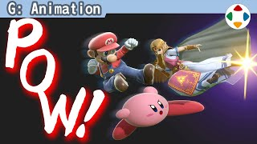
速览
有攻击来往的游戏，攻击动作当然很重要：舒不舒服决定手感。各类动作中它特别影响游戏乐趣，这次只谈攻击命中瞬间的姿势。《大乱斗》命中时会有顿帧，顿帧时的构图最留在脑中，所以很重要；用手办照片指定攻击动作时，也大多是塑造那一瞬。诀窍说起来多如山，介绍几个要点：整体偏夸张，远看也清楚；攻击要跨过中线，偏向画面深处或前方，本该打中的也会打不中；不做对称（左右对称）的姿势，要做的话只限搞笑或有意图的；尽量避免躯干正侧，稍微扭转让姿势有张弛；挥动尽量在稍微挥出后顿帧命中，没挥出时命中缺乏打中感；能承受一定透视，因为画面左右从画角看会稍有不同；而最重要的是剪影要漂亮：四肢动作看得清，各自的剪影突出。说不完也因情况而异，就到这里；《大乱斗》是侧面看的游戏，当然重视侧面剪影，这里决定了才是绝对。这是焰的监修中出的图：动作设计师交的是这样，但姿势这样会更好——剪影因一点小事就大不同。这种感觉摆弄立体物就能培养，把定格的姿势变成自己的吧。
1. 命中瞬间最重要 0:04
有攻击来往的游戏，攻击动作当然很重要：舒不舒服，游戏手感差别很大。它在各类动作中特别影响游戏乐趣，这次只谈命中瞬间的姿势。
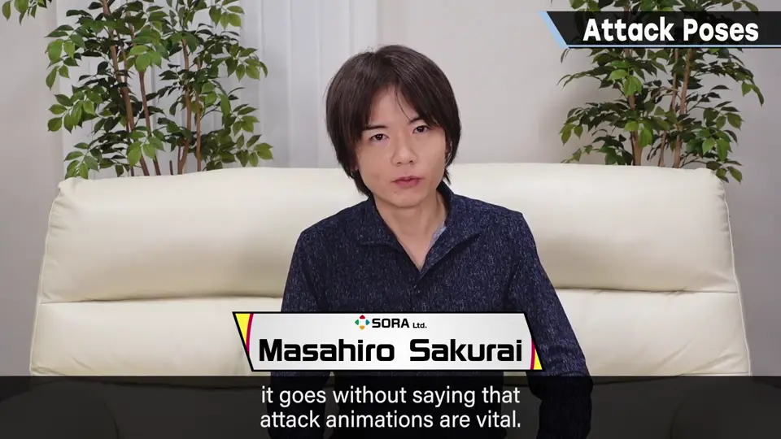
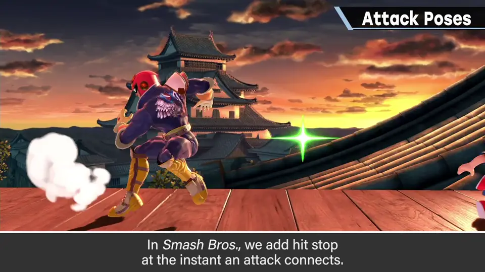
《大乱斗》命中时会加入顿帧，顿帧时的构图最会留在脑中，所以很重要。
2. 几个要点 0:44
- 整体偏夸张，远看也清楚。
- 攻击要跨过中线：偏向画面深处或前方，本该打中的也会打不中。
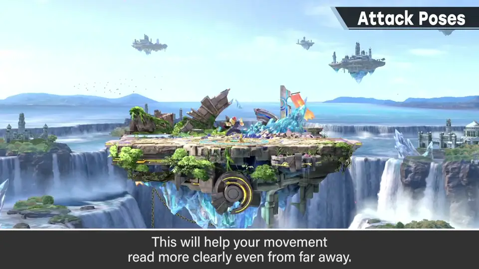
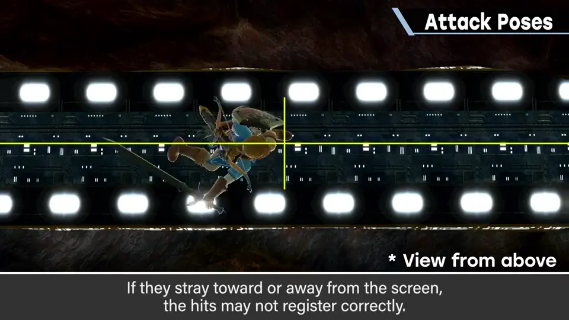
- 不做对称（左右对称）的姿势；要做的话只限搞笑的或有意图的。
- 躯干尽量避免正侧，稍微扭转，让姿势有张弛。
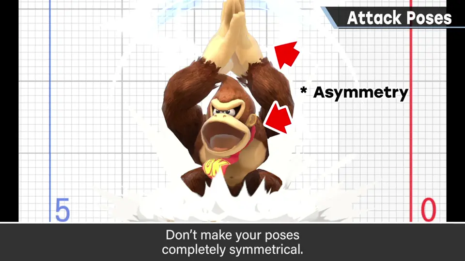
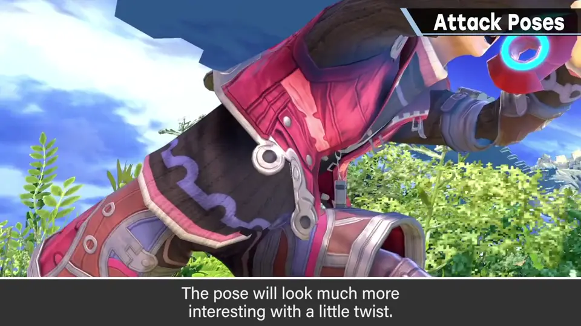
- 挥动尽量在稍微挥出后再顿帧命中；没挥出时命中缺乏打中感。
- 能承受一定透视：画面左右从画角看起来会稍有不同。
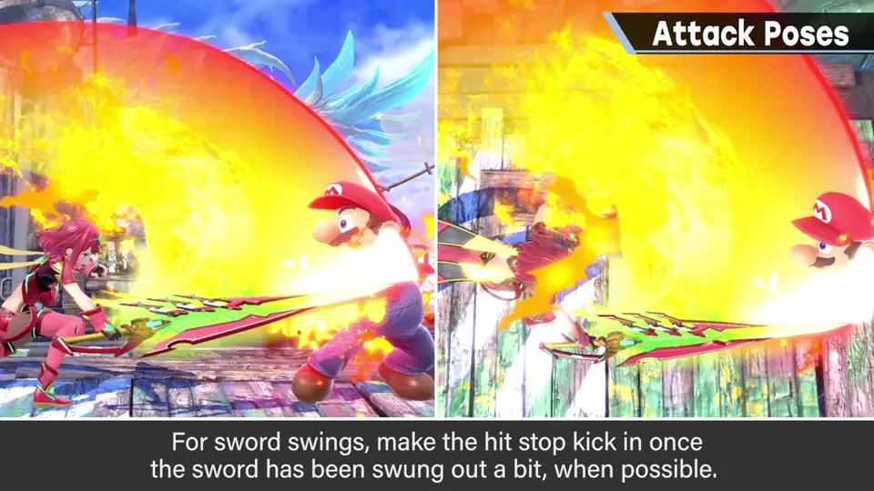
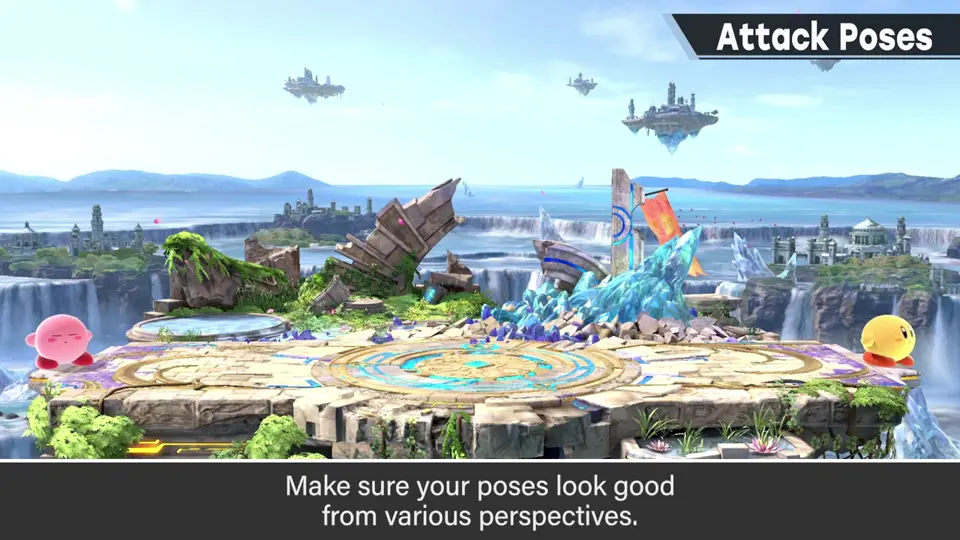
3. 剪影是绝对 1:48
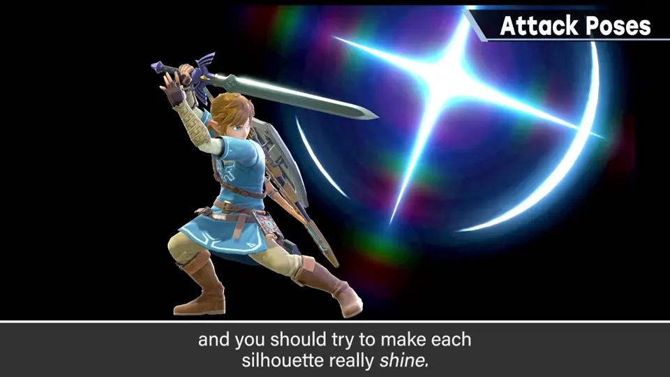
说不完也因情况而异，就到这里。《大乱斗》是从侧面看的游戏，当然重视侧面剪影——这里决定了才是绝对。
4. 焰的监修例 2:19
这是焰的监修中出的图：动作设计师交来的是这样的动作，但姿势这样会更好。
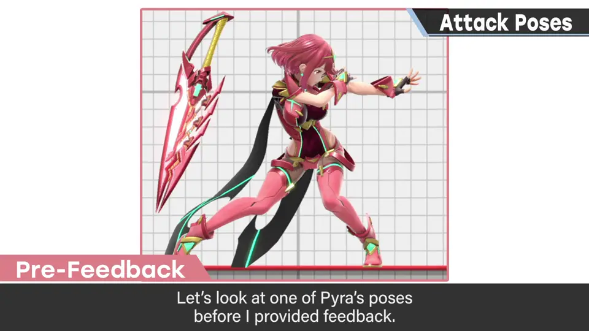
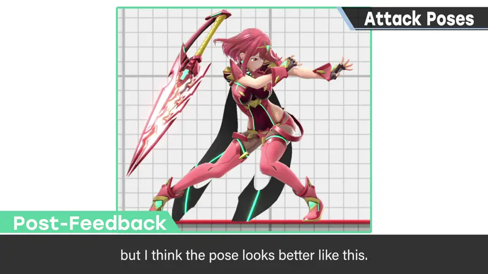
自测题
1. 为什么命中瞬间的姿势最重要？
《大乱斗》命中有顿帧，那一刻的构图最留在脑中。 0:30
2. 攻击为什么要跨过中线？
偏向画面深处或前方，本该打中的也会打不中。 1:02
3. 攻击姿势最重要的是什么？
剪影漂亮——侧面看的游戏中侧面剪影是绝对。 1:55